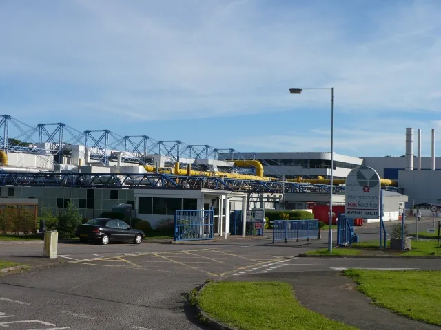

이재명 대통령, 메가프로젝트 2차 점검회의 주재…광주 군공항 인프라·주 52시간 쟁점
이재명 대통령이 10일 청와대에서 '3대 메가프로젝트' 추진 상황을 점검하는 2차 민관합동 점검회의를 주재했다. 지난달 6일 열린 1차 회의에 이어 두 번째로 열린 이날 회의에서는 호남권 반도체 클러스터, 충청권 첨단산업, 영남권 피지컬 인공지능(AI) 사업 등 정부가 추진 중인 3대 프로젝트의 후속 조치 이행 상황과 남은 걸림돌이 도마에 올랐다. 정부 부처 장관들과 지방자치단체장, 관련 기업 관계자들이 두루 참석해 진행 상황을 보고하고 애로사항을 전달한 것으로 알려졌다.
정부가 추진 중인 호남권 반도체 클러스터는 삼성전자와 SK하이닉스가 각각 400조원씩, 총 800조원을 투자해 반도체 팹 4기를 짓는 초대형 프로젝트다. 지난달 1차 회의에서 이 대통령은 "토지취득 과정에서 협의취득과 강제수용 절차를 동시에 시작하라"고 지시한 바 있으며, 이후 클러스터 부지는 광주 군공항 이전 지역으로 확정됐다. 다만 군공항 이전에 따른 지역 주민 보상과 대체 부지 선정 등 후속 절차는 여전히 진행형이다.

이날 회의에서는 광주 군공항 이전 문제와 함께 전력·용수 공급, 인허가 절차 단축 등 인프라 지원 방안이 집중 논의됐다. 대규모 팹을 동시다발적으로 가동하려면 안정적인 전력망과 공업용수 확보가 필수적인 만큼, 정부는 관련 부처와 지방자치단체 간 협의 속도를 끌어올리고 행정 절차를 대폭 단축하겠다는 방침을 재확인한 것으로 전해졌다.
이번 회의의 최대 쟁점은 주 52시간 근로시간 예외 적용 여부였다. 김정관 산업통상자원부 장관은 첨단산업 인력에 대해 "일할 자유를 막아서는 안 된다"며 예외 적용 필요성에 힘을 실었지만, 김영훈 고용노동부 장관은 기존 특별연장근로 제도로도 대응이 가능하다는 입장을 밝히며 신중론을 폈다. 두 부처의 시각차가 좁혀지지 않으면서 회의에서도 결론을 내지 못한 것으로 알려졌다.

청와대 핵심 관계자는 회의 직후 취재진과 만나 "주 52시간 예외 문제는 아직 결정된 바 없다"며 "각 부처가 저마다의 입장을 개진하고 있으나, 예외가 정말 필요한지는 사회적 논의를 거쳐 다시 검토할 필요가 있다"고 밝혔다. 특별법 제정 여부에 대해서도 "구체적인 논의는 아직 미정"이라며 신중한 태도를 유지했다.
3대 메가프로젝트에는 반도체 클러스터 외에 충청권 첨단산업단지와 영남권 피지컬 AI 사업도 포함돼 있다. 정부는 특정 지역에 투자가 편중되는 것을 막고 지역 균형발전을 함께 꾀한다는 취지에서 세 프로젝트를 동시에 추진하고 있지만, 지역 간 이해관계와 예산 배분 문제가 얽히면서 실제 속도 조절은 말처럼 쉽지 않다는 지적도 나온다. 일부 지자체에서는 자기 지역 사업이 상대적으로 뒷순위로 밀리는 것 아니냐는 우려도 제기되는 것으로 전해졌다.
이 대통령은 이날 회의에서도 "속도전을 계속해야 한다"는 취지의 발언을 이어간 것으로 전해졌다. 정부는 다음 달께 3차 점검회의를 열어 특별법 윤곽과 인허가 진행 상황을 다시 짚어볼 계획이며, 재계와 지방자치단체는 이번 회의에서 오간 논의가 실제 투자 일정과 착공 시기에 어떤 영향을 미칠지 예의주시하고 있다. 반도체 업계에서는 전력·용수 인프라 구축이 늦어질 경우 팹 가동 일정 자체가 지연될 수 있다는 점에서, 이번 정부 지원 방안의 실행 속도가 향후 투자 계획의 관건이 될 것이라는 관측이 나온다.